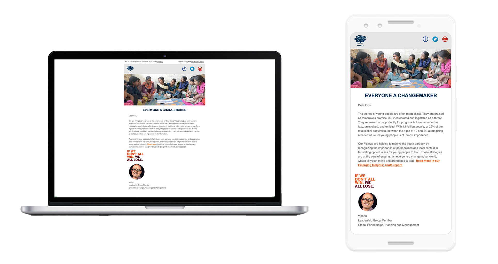
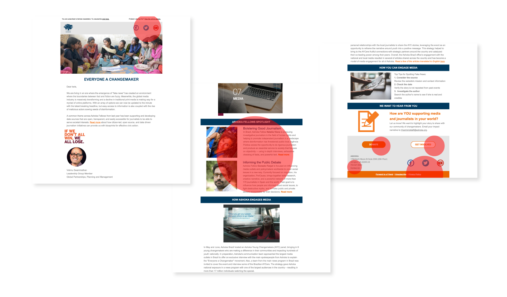
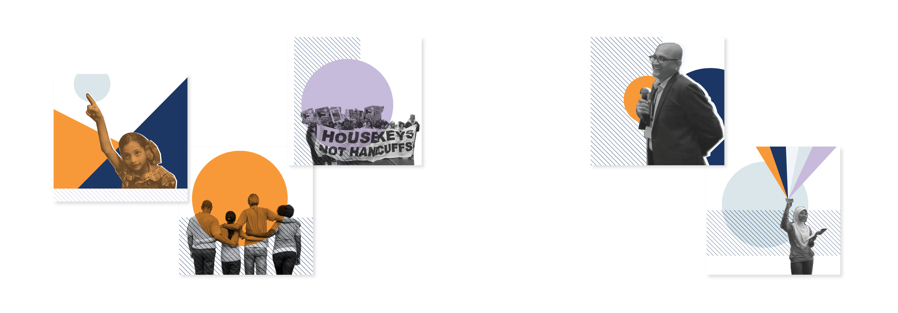
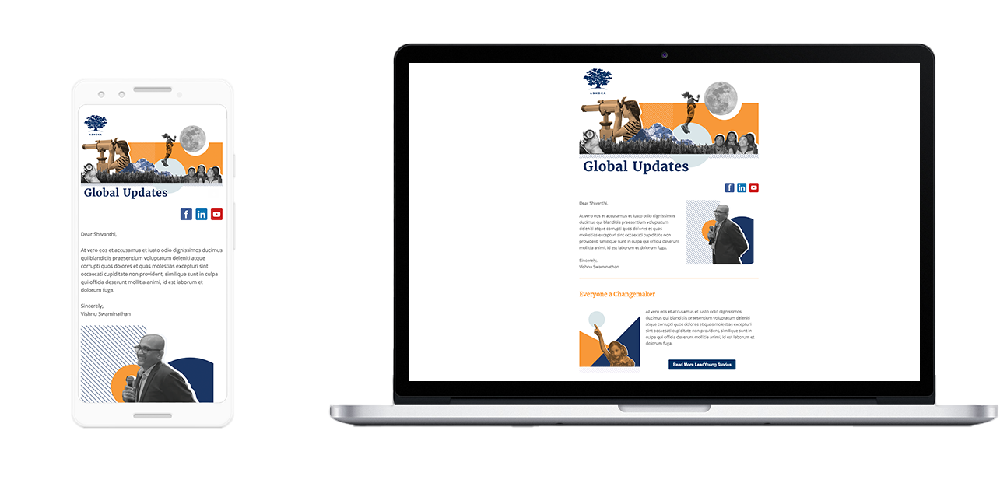

Ashoka’s newsletter is a critical communication channel, directly tied to donation income. Yet its branding had not been refreshed in nearly a decade. The design felt dated, and offices were improvising layouts without a shared framework. The risk was clear: inconsistent presentation could weaken donor trust and engagement.
Legacy newsletter layout showing dated branding, underscoring the need for refresh.
Analysis of the Problem
Working with the web team, we reviewed analytics and heat‑maps to understand reader behavior. Three insights stood out:
Social media icons were surprisingly high‑engagement points, with readers actively sharing content.
Content spotlight — especially the “Ashoka Fellows Spotlight” — was the true currency, drawing the most traffic.
Calls to action — “Get Involved” at the end of the email generated donation numbers nearly equal to “Donate Now.”
These findings highlighted both strengths (content and sharing) and opportunities (visual hierarchy and CTA clarity).
User interaction heat‑map highlighting high engagement with social icons, strong traffic to Fellows Spotlight, and donation clicks spread across CTAs.
Fonts and colors were refreshed to align with the global brand system.
Social media links were placed at both the top and bottom for easier access.
Popular content areas were retained but enhanced with eye‑catching branded imagery.
CTAs were visually redesigned for clarity, while their language and position remained unchanged to allow future testing.

Updated imagery aligned with Ashoka’s 2019 style guide, bringing cohesion and vibrancy to newsletter visuals.
Outcome and Impact
Before deployment, leadership raised concerns about potential revenue risk: if donation amounts shifted, it would be difficult to isolate whether the cause was the new design, UX changes, or external donation cycles. Without full buy‑in, the updated newsletter was not launched.
Instead, the Global Partnerships team recognized the value of the new visual assets and repurposed them in corporate partnership pitch decks. The design work thus seeded a broader asset library, strengthening Ashoka’s brand presence in high‑stakes presentations.

Refreshed fonts and color palette applied to newsletter design, ensuring consistency with Ashoka’s global brand system.
Lessons Learned
Design assets are versatile — even if a product isn’t deployed, visuals can find new life in other contexts.
Leadership alignment is critical — successful implementation requires trust and consensus, especially when revenue streams are involved.